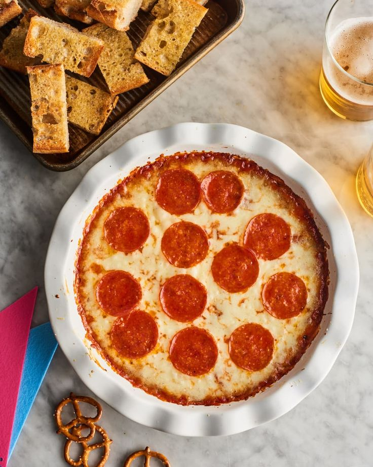

Pizza Dip

Easy Hot Pizza Dip
This easy pizza dip is sure to be a crowd pleaser.
Prep time:5 min
Cook time:20 min
Total:25 min
Ingredients:
Dip
- 1 (8 oz) package cream cheese; softened
- 4 oz grated parmesan cheese (about 1 cup); divided
- 6 oz low-moisture mozzarella cheese, shredded (about 1 1/2 cups); divided
- 1 teaspoon dried italian seasoning
- 1 cup pizza or marinara sauce
- 20 pepperoni slices (about 2 oz, optional)*
*can substitute with any of your favorite pizza toppings
Serving Options
- flatbread
- pita chips
- sliced toasted baguette
- bagel chips
- tortilla chips
- pretzels
Steps:
- Place a rack in the middle of oven and pre-heat to 350˚F
- Combine softened cream cheese and italian season in bottom of 9-inch baking dish. Stir to combine with rubber spatula, and spread into an even layer. Sprinkle evenly with 3/4 cup of mozzarella, followed by 1/2 cup parmesan. Pour 1 cup pizza or marinara sauce over the cheese and spread in an even layer. Sprinkle remaining 3/4 cup mozzarella and 1/2 cup parmesan cheeses. Place 20 pepperoni slices (or whatever toppings you choose) in even layer over cheese.
- Bake until heated through and cheese is melted and bubbling, about 20 minutes. Let cool 5-10 minutes before serving. Serve warm.